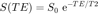
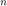
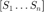
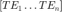
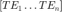
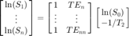
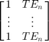
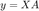
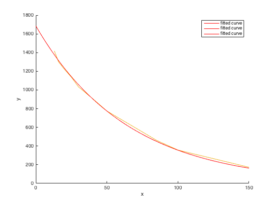

MRI T2 Relaxometry Calculator
Calculation of T2 in MR imaging:

% nifti_file = openFile('Open NIFTI files', '*.nii', 'NIFTI files (*.nii)'); % nifti_file = '/Users/Pouria/OneDrive/Course Materials/MPhysGB27/Matlab/Coursework/Data/S01-F23-qt2.nii'; % GUI-wide variable, accissible to other functions in GUI. % nifti_img = nii_read(nifti_file); % image_size = size(nifti_img); % Retrieving NifTi image info % [info, img_dims, data_type] = nii_info(nifti_file); % nif_img = nii_read(nifti_file); % u=0; % nif_dif = NaN(10, 1); clear; clc; % Echo time, $ TE $: echo_time__te = [ 13 16 20 25 30 40 50 85 100 150]; % MR Signal, $ S $: mr_signal__s = [1418 1300 1223 1137 1033 907 775 461 357 173]; ln_mr_signal__s = log(mr_signal__s); echo_time_len = length(echo_time__te);
For  measurements of the MR signal  , corresponding to an number of  values  , it work out as:
values  , it work out as:

therefore:

matrix__te = [... ones(1, echo_time_len); ... echo_time__te ... ] ;
As ; therefore
![$$
\left[ \matrix {
\textup{ln}(S_{0}) \cr
-1/T_{2} \cr
} \right]
= \frac{\textup{ln}(S)}{
\left[ \matrix {
1 & TE_{n} \cr
\vdots & \vdots \cr
1 & TE_{n} \cr
} \right]
} $$](sandbox_eq00697842492732208220.png)
mm = ln_mr_signal__s / matrix__te; % Initial signal intesity, $ S_{0} $: init_signal__s0 = round(exp(mm(1)), 2); % Intrinsic $ T2 $ intrinsic_t2= round(-1/mm(2), 2); TE_F = transpose(matrix__te) * [log(init_signal__s0); -1/intrinsic_t2]; fit_data = fit(transpose(echo_time__te), transpose(mr_signal__s), 'exp1'); figure(1) hold on plot(echo_time__te, mr_signal__s) plot(fit_data, 'fit') hold off % stylishPlot(fit_data, TE, S);